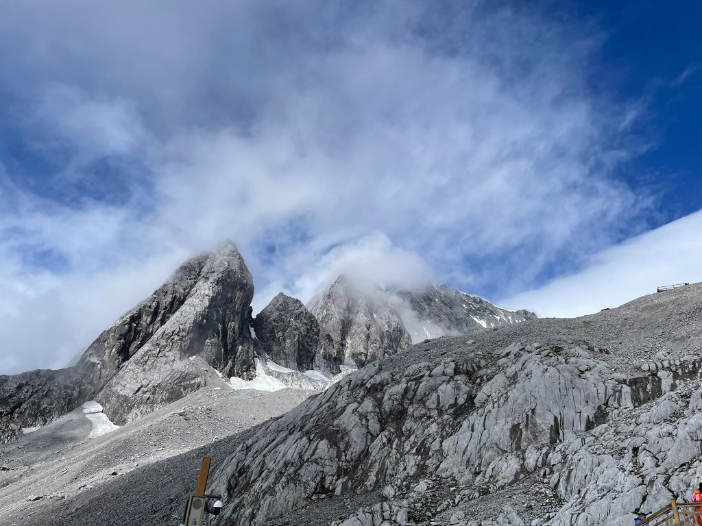

Trip Archive
I started this page in May 2026 to share some of my trips outside, including hiking, camping, climbing, and whatever else pulls me into the open air. I have loved scenic views since I was young, but I did not really spend time in the wilderness until I moved to Seattle for my PhD. Growing up in the city of Beijing, I “climbed” the usual paved hills and did the usual tourist trips back in my country; looking back, they were closer to walking stairs in a well-maintained park. Here I began with trails around the city, then, once I had a car, the state parks on the outskirts and forests farther out. Mountains, especially, took hold of me. I am a little obsessed with them.
The summer after finishing my Master’s degree, I went to Yunnan province and stood below the Yulong Xueshan (玉龙雪山). It was another tourist trip, but we were at 4600m and it felt so real. The weather was not ideal: heavy cloud, a whiteout, almost no view from the high places. Still, the granite walls and the shapes glaciers had carved left me speechless. Since then I have dreamed of returning to mountains, visiting more and perhaps climbing — especially taller ones, snow and ice — and, yes, crazy as I always am, of one day standing on an eight-thousander if money, body, and luck allow. It sounds like I am going too far when I say it out loud. I mean it anyway.

In Washington I learned that green hills like Mount Si, beautiful as they always are, were not enough for me. For the breathtaking snowy alpine peaks, I always wanted to be on the top, not only on the trail around them. In the North Cascades there are two-thousand-meter glaciated peaks you can reach without altitude sickness; on the road and from the plane, snowy volcanoes like Mt. Rainier and Mt. Baker keep appearing, as if they were saying: start here — train yourself — maybe someday you will finish what you began. I asked around for alpine summits that were not too technical, preferably with snow and glaciers. On a hitchhike back down from Hidden Lake Lookout, a former local mountaineer told me Ruth Mountain could be a choice; later I confirmed with Galen, a true mountain man who never tires of my endless beginner questions. It took me two attempts (early season is honest about how unready you can feel). When I finally stood up there, I realized it was possible for me to stand where I had once only stared. If I could summit Ruth with average fitness and almost no skills, nothing could hold me back, especially since I can always learn from failures. After that I planned, failed, and climbed more alpine peaks in this state that season, each one its own memory and its own hardness. I do not know whether I will ever go very technical or very fast. I would rather stay an admirer of the mountains, carrying myself up under my own power, than become a conqueror or a racer. Lately I have also been visiting Washington fire lookouts, history folded into a view.
I believe many things are destined to be, like what brought me to Washington to resume and pursue my love for mountains. Do I have a target list of peaks I want to climb? No, I don’t. If it’s meant to be, it will be.
Some of these trips also live on my WTA page.
Disclaimer: Some of these activities can be inherently dangerous — do your own research.
Activity types
- casual
- hiking
- cycling
- camping
- backpacking
- scrambling
- kayaking
Loading trips…